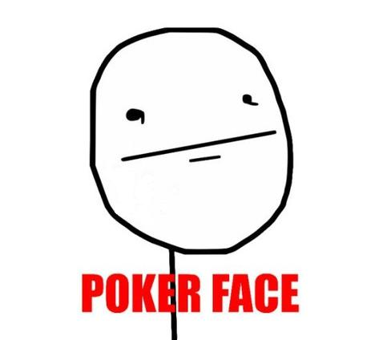
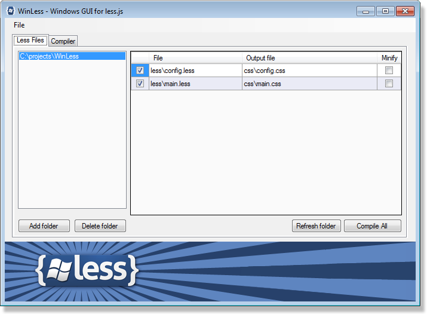

Aumentando a produtividade com o
Lucas Cavalcanti
Front end Engineering
at: MGR Tech

O que veremos:
- CSS e seus problemas
- O que é o {Less}?
- O que é um pré-processador?
- Porque usar {Less}?
- Como utilizar
- Usando Variáveis
- Usando Mixins
- Pattern-Matching
- Regras aninhadas
- Operações
- Funções de cor
- Namespaces
- @import
- Comentários
- Bônus
CSS e seus problemas?
Como estamos acostumados a codar?
LinkCSS e seus problemas?
OK!
Mas qual é o problema?
CSS e seus problemas?
Desorganização
CSS e seus problemas?
Repetição
CSS e seus problemas?
Manutenção
CSS e seus problemas?
2 Devs trabalhando no mesmo CSS

CSS e seus problemas?
E como resolvemos isso?
O que é o {LESS}?
O LESS é um pré-processador de CSS.
E o que é Pré-processador?
É um programa que pega um texto e efetua conversões léxicas.
Sim... E o que danado é uma
conversão léxica?

O que são conversões Léxicas?
Léxico pode ser definido como o acervo de palavras de um determinado idioma/linguagem
Por que usar o {less}?
- Menos repetição
- É Simples
- Possibilita criar Variáveis, Funções e Métodos
- Aninhar seletores
Como utilizar?
Less.app
Download
WinLess

DownloadUsando Variáveis
style.less
@cor_padrao: #eee;
body{
color:@cor_padrao;
}
#footer{
color:@cor_padrao;
}
Usando Variáveis
style.css
body{
color:#eee;
}
#footer{
color:#eee;
}
Usando Variáveis
Variáveis com escopo.style.less
@largura: 500px;
body{
width:@largura;
}
#footer{
@largura: 300px;
width:@largura;
}
Usando Variáveis
Variáveis com escopo.style.css
body{
width:500px;
}
#footer{
width:300px;
}
Usando Variáveis
Interpolação de stringsstyle.less
@path: '../lib/assets/images';
#header{
background: url("@{path}/logotipo.png");
}
Usando Variáveis
style.css
#header{
background: url("../lib/assets/images/logotipo.png");
}
Usando Mixins
Imagine uma classe sendo chamada por outra classe.
Usando Mixins
style.less
.img-replacement{
display:block;
overflow:hidden;
text-indent:-999em;
}
#title{
font:16px arial;
color:red;
.img-replacement;
}
Usando Mixins
style.css
.img-replacement{
display:block;
overflow:hidden;
text-indent:-999em;
}
#title{
font:16px arial;
color:red;
display:block;
overflow:hidden;
text-indent:-999em;
}
Usando Mixins com parâmetros
style.less
.border_radius(@radius){
border-radius: @radius;
-moz-border-radius: @radius;
-webkit-border-radius: @radius;
}
#box_aside{
width:300px;
height:300px;
background:blue;
.border_radius(10px);
}
Usando Mixins com parâmetros
style.css
#box_aside{
width:300px;
height:300px;
background:blue;
border-radius: 10px;
-moz-border-radius: 10px;
-webkit-border-radius: 10px;
}
Usando Mixins sem parâmetros
style.less
.nav_left(){
float:left;
display:inline-block;
}
#nav_main li{
width:60px;
.nav_left;
}
Usando Mixins sem parâmetros
style.css
#nav_main li{
width:60px;
float:left;
display:inline-block;
}
A Variável @arguments
A variável @arguments, dentro do Mixins, se refere a todos os atributos passados por parâmetro.A Variável @arguments
style.less
.box_shadow (@x: 0, @y: 0, @blur: 1px, @color: #000) {
box-shadow: @arguments;
-moz-box-shadow: @arguments;
-webkit-box-shadow: @arguments;
}
#box{
width:60px;
height:60px;
.box_shadow(10px, 15px, 2px);
}
A Variável @arguments
style.css
#box{
width:60px;
height:60px;
box-shadow: 10px 15px 2px #000;
-moz-box-shadow: 10px 15px 2px #000;
-webkit-box-shadow: 10px 15px 2px #000;
}
Pattern-matching
Padrão correspondente aos parâmetros passados.Pattern-matching
style.less
.bgc (dark, @color) {
background-color: darken(@color, 5%);
}
.bgc (light, @color) {
background-color: lighten(@color, 5%);
}
@pat_mat: dark;
body{
.bgc(@pat_mat, green);
}
#box{
@pat_mat: light;
.bgc(@pat_mat, green);
}
Pattern-matching
style.css
body {
background-color: #006700;
}
#box {
background-color: #009a00;
}
Pattern-matching
O Pattern-matching também pode ser "escolhido", pela quantidade de parâmetros.Pattern-matching
style.less
.border_radius(@radius){
border-radius: @radius;
-moz-border-radius: @radius;
-webkit-border-radius: @radius;
}
.border_radius(@top, @left, @bottom, @right){
border-radius: @arguments;
-moz-border-radius: @arguments;
-webkit-border-radius: @arguments;
}
#box{
.border_radius(10px);
}
#box_aside{
.border_radius(10px 5px 15px 20px);
}
Pattern-matching
style.css
#box {
width: 300px;
height: 300px;
background: blue;
border-radius: 10px;
-moz-border-radius: 10px;
-webkit-border-radius: 10px;
}
#box_aside {
width: 300px;
height: 300px;
background: red;
border-radius: 10px 5px 15px 20px;
-moz-border-radius: 10px 5px 15px 20px;
-webkit-border-radius: 10px 5px 15px 20px;
}
Regras Aninhadas
Indentando o CSS.Regras Aninhadas
style.less
#header{
background-color:black;
#nav_main{
li,a{
color:#ccc;
.nav_left;
}
}
}
Regras Aninhadas
style.css
#header {
background-color: black;
}
#header #nav_main li,
#header #nav_main a {
color: #ccc;
display: inline-block;
float: left;
}
Regras Aninhadas - Pseudo-Classes
Utilizando pseudo-classes no LESSRegras Aninhadas - Pseudo-Classes
style.less
#nav_main a{
color: #ccc;
&:hover{
color:red;
}
&.active{
&:hover{
text-decoration:underline;
}
}
}
Regras Aninhadas - Pseudo-Classes
style.css
#nav_main a {
color: #ccc;
}
#nav_main a:hover {
color: red;
}
#nav_main a.active:hover {
text-decoration: underline;
}
Operações
Qualquer número, cor ou variável pode ser usado em operações.O LESS identifica cada um deles.
Operações
style.less
.centralize(@width, @height){
width: @width;
height: @height;
position:absolute;
top:50%;
left:50%;
margin:-(@height/2) 0 0 @width/2*-1;
}
#all{
.centralize(100px,300px);
color: #999/3;
background-color:(yellow) + #333;
}
Operações
style.css
#all {
width: 100px;
height: 300px;
position: absolute;
top: 50%;
left: 50%;
margin: -150px 0 0 -50px;
color: #333333;
background-color: #ffff33;
}
Funções de cor
O Less tem algumas funções que transformam cores.Funções de cor
lighten(@color, 10%);
// retorna uma cor que é 10% *mais clara* que @color
darken(@color, 10%);
// retorna uma cor que é 10% *mais escura* que @color
saturate(@color, 10%);
// retorna uma cor 10% *mais* saturada que @color
desaturate(@color, 10%);
// retorna uma cor 10% *menos* saturada que @color
fadein(@color, 10%);
// retorna uma cor 10% *mais* transparente que @color
Funções de cor
fadeout(@color, 10%);
// retorna uma cor 10% *mais* transparente que @color
fade(@color, 50%);
// retorna @color com 50% de transparencia
spin(@color, 10);
// retorna uma cor com uma matiz (hue) 10 graus maior que @color
spin(@color, -10);
// retorna uma cor com uma matiz (hue) 10 graus menor que @color
mix(@color1, @color2);
// retorna uma mistura entre a @color1 e @color2
Namespaces
Namespaces são parecidos com métodos.Namespaces
style.less
#box{
h1{
color:#fff;font-size:15px;
}
.centralize(@width, @height){
width: @width;
height: @height;
position:absolute;
top:50%;
left:50%;
margin:-(@height/2) 0 0 @width/2*-1;
}
}
#footer{
#box > .centralize(100px, 200px)
}
Namespaces
style.css
#box h1 {
color: #fff;
font-size: 15px;
}
#footer {
width: 100px;
height: 200px;
position: absolute;
top: 50%;
left: 50%;
margin: -100px 0 0 -50px;
}
Comentários
Há dois tipos de comentários no Less
- Os Invisíveis
- Os Visíveis
Comentários
Invisível
// Esse comentário não é compilado
Comentários
Visível
/* Esse comentário é compilado */
@Import
No Less podemos importar outros arquivos com as extensões .less ou .css
@import
@import 'style';// sem a extensão, por padrão é chamado o .less
@import 'style.less';
@import 'style.css';
Obrigado!
https://facebook.com/lucas.cavalcantimeloqueiroz
http://lucascavalcanti.com.br/
https://github.com/lucascmelo/
Bônus
Bootstrap
O Bootstrap é elegante, intuitivo e poderoso (FODA).
Um Framework para estruturar seus projetos de forma rápida e fácil.
Legal!
Mas o que ele faz?

- Fluid grid
- Responsive design
- Supported devices
- Base CSS
Forms, Buttons, Images, Icons Sprites... - Dropdown menus
- JS Componentes
Modal, ToolTip, Accordion, Gallery Images...
E o melhor de tudo...


Como utilizar?
http://twitter.github.com/bootstrap/Referências
Valeu!
https://facebook.com/lucas.cavalcantimeloqueiroz
http://lucascavalcanti.com.br/
https://github.com/lucascmelo/